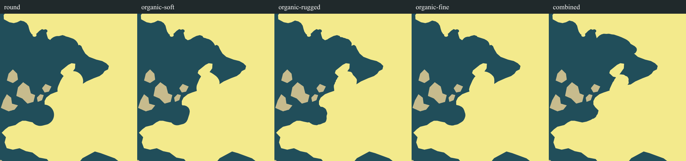
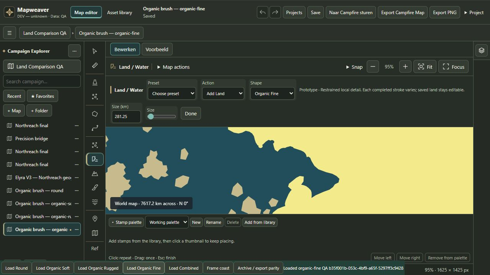

Organic Land Brush Prototype
ADJUST — technical validation passed; production visual acceptance withheld. Rugged reduces circular edges, but terminal lobes persist. All five comparisons use native UI downloads, identical crop scale and the same Northreach V3 starting geometry. Combined uses one extra operation and different diameters.
Report index · Visual judgment and ten answers · Tests · Measurements · Isolated QA editor
Equal-scale native crops

Full native exports and editable projects
Actual editor controls

No Primary Development or Campfire changes. No merge, push or package.